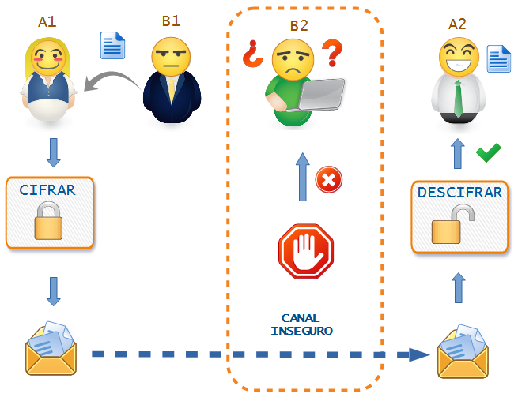

Seguro que recuerdas cuando de pequeño utilizabas algún truquito para que sólo algún compañero o compañera os entendiera. Por ejemplo, cambiar todas las vocales por la "i".
"Li llivii in Sivilli is ini mirivilli"
Vamos a divertirnos un poco al realizar un juego en grupo para comprobar tus habilidades:
Inventa: Con tu compañero o compañera (A1 y A2) formaréis el EQUIPO ESPÍA y en secreto, dedicando unos 15 ó 20 minutos como máximo, vais a inventar un sistema de encriptación, no demasiado complicado, pero algo mejor que el de la "i" del ejemplo. Ponle un poco de imaginación.
Ahora, con otro grupo de otros dos compañeros o compañeras (B1 y B2), van a ser el equipo SERVICIO SECRETO y vamos a jugar:
- Conocemos el mensaje. Un miembro (B1) del otro grupo se pondrá aparte contigo (A1) y te pasará una frase corta escrita en un papel, sin hablar con su compañero o compañera.
- Ciframos el mensaje. Con el sistema previamente inventado junto con A2, debes escribir frase que te ha pasado B1 encriptándola.
- Enviamos el mensaje. Después, pasarás el mensaje al otro miembro del otro grupo (B2) que lo intercepta y que debe intentar descifrar el mensaje escribiéndolo en un papel sin saber el sistema y sin haber hablado con su compañero o compañera (B1).
- Recibimos el mensaje. Tras un tiempo máximo acordado, B2 ahora pasará el mensaje a tu compañero o compañera (A2) que conoce el sistema y descifra el mensaje escribiéndolo en otro papel.
El siguiente esquema representa la secuencia a seguir por los personajes.
Finalmente se compararán los tres papeles: mensaje original, propuesta realizada por B2 y el resultado obtenido por A2.
- ¿Ha conseguido B2 descifrar el mensaje?
- ¿Lo ha interpretado correctamente A2?
- Podéis repetir el juego pero ahora intercambiando los papeles de los equipos A y B.
¿Te has divertido?, ahora es el momento de la puesta en común con el resto de los equipos y de comparar los sistemas utilizados para ocultar el mensaje.
 Ya hemos recordado algunas cosas que tenías olvidadas y que vas a necesitar. En este apartado vamos a experimentar con tu imaginación e inventando estratégias. Esta capacidad también vas a necesitarla para superar el reto final.
Ya hemos recordado algunas cosas que tenías olvidadas y que vas a necesitar. En este apartado vamos a experimentar con tu imaginación e inventando estratégias. Esta capacidad también vas a necesitarla para superar el reto final.